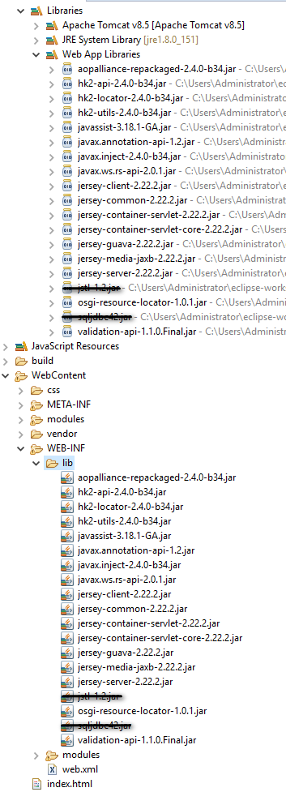

Copier les librairies fournies dans le répertoire /WEB-INF/lib. Les librairies barrées ne font pas partie de l'API JAX-RS (JSTL, JDBC)
La classe suivante permet de configurer l'URL racine à utiliser pour effectuer des requêtes vers des services web REST.
package fr.eni.javaee.module9;
import javax.ws.rs.ApplicationPath;
import javax.ws.rs.core.Application;
@ApplicationPath("/modules/modules9/rest")
public class ConfigurationREST extends Application{
}